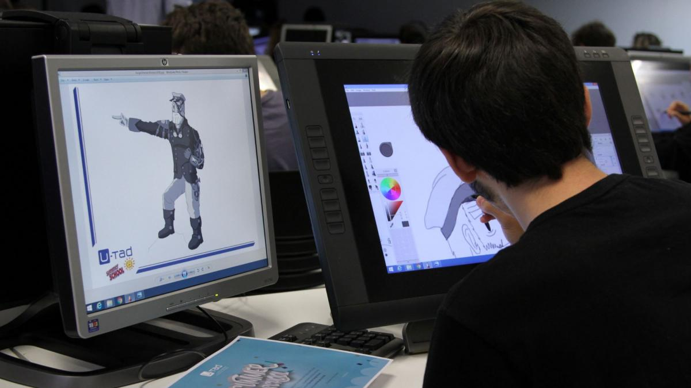
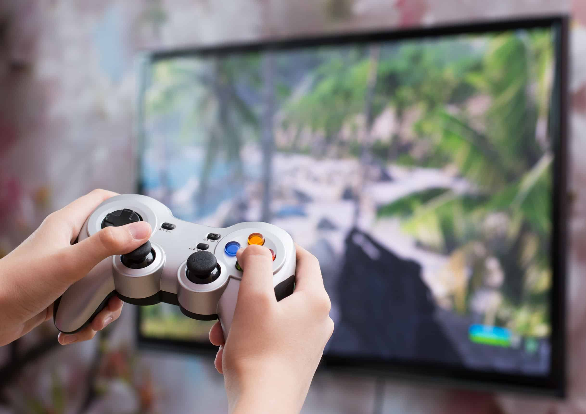
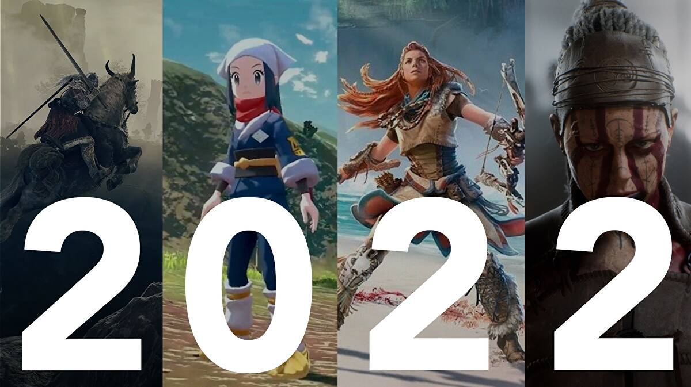

Planeación
Sin duda, aterrizar y trabajar la idea de un videojuego implica un arduo trabajo pues es la antesala al concepto del juego.
Una vez establecido, todos las personas y equipos de los departamentos involucrados pueden empezar a probar el concepto.
Aquí se toman las ideas que se han compartido y se analiza la viabilidad del proyecto para ser producido por el estudio. En este punto surgen preguntas como: ¿Cuál es el costo aproximado del proyecto? ¿Es necesario un nuevo motor de juego? ¿Cuántas personas necesitamos en el equipo? ¿Cuál es la fecha estimada de lanzamiento? La prueba de concepto es vital para el éxito de un juego, pues pone en perspectiva cuáles son las posibilidades del proyecto y avanzar, con ellas en mente, el desarrollo.
Preproducción
En esta etapa, los escritores, diseñadores, artistas, ingenieros, leads de proyecto y otros departamentos trabajan y colaboran entre sí para definir la manera en que darán vida al videojuego.
Durante este proceso colaborativo se llevan a cabo juntas y discusiones entre varios equipos. Por ejemplo: escritores y leads trabajando la narrativa de la historia; ingenieros estableciendo qué pueden realizar con la tecnología disponible; diseñadores y artistas asegurándose que la paleta de colores, visuales y arte sigan la misma línea preestablecida; etc.
Es en este proceso donde los desarrolladores trabajan prototipos de personajes, ambientes, interfaces, etc., de la próxima obra artística que planean. De esta forma pueden saber con qué están trabajando y avanzar a la siguiente etapa.

Producción
Ciertamente la etapa de producción es la más compleja. La mayoría de los recursos, tiempo y trabajo que conlleva desarrollar un videojuego se los lleva la producción.
Usualmente, en esta etapa: Los modelos de personajes se diseñan y renderizan hasta que luzcan como deben.El diseño de audio crea todos los sonidos del mundo del juego. Los diseñadores de nivel crean los ambientes de forma que sean atractivos para los jugadores.
Se graba el doblaje con los actores. Los programadores escriben enormes códigos para darle vida a los elementos del juego. Es importante mencionar que esta etapa no tiene un tiempo definido. Dependiendo del tipo de producción, esta etapa puede tomar muchos años para completarse debido a muchos factores, como por ejemplo: cambios de forma constante; rehacer partes ya terminadas que no satisfacen los objetivos del proyecto.

Periodo de prueba
Cada elemento, detalle y mecánica del juego debe someterse al control de calidad antes del lanzamiento. Para que un videojuego esté listo para su versión alpha, primero debe pasar por las manos de testers para que se identifiquen cuestiones como: ¿Hay áreas o niveles con muchos bugs? ¿Todo se está renderizando correctamente? ¿El personaje se queda atorado permanentemente en un lugar? ¿Los diálogos son atrapantes y realistas?
Generalmente hay distintos tipos de testers. Unos se enfocan en tratar de “romper” el juego; otros analizan la dificultad del juego para ver si es muy fácil o difícil. Este equipo tiene que asegurarse que el videojuego sea divertido y atractivo para generar ventas. Después del periodo de prueba, el juego debería de estar listo para una versión beta.
.jpg)
Pre-lanzamiento
Esta es una de las etapas del desarrollo de videojuegos más estresantes para los grandes estudios y para los creadores independientes, pues tienen que elaborar una estrategia de mercadotecnia para vender su juego. Teasers, imágenes promocionales, tráilers cinematográficos, gameplays, streamings de influencers de videojuegos y demás, son estrategias que los estudios lanzan para promocionar el juego y que la audiencia lo conozca.
Sin duda, el pre-lanzamiento es un proceso que no se debe de subestimar por el fuerte impacto positivo o negativo que puede llegar a generar.

Lanzamiento
Por fin se define una fecha de lanzamiento y el equipo debe trabajar muy duro para pulir todos los detalles que sean necesarios. Durante esta etapa, los desarrolladores hacen una lista de bugs que tienen que erradicar, de mayor a menor gravedad. Comienzan con aquellos bugs que pueden “crashear” el juego, hasta llegar a aquellos que representan problemas menores. Cuando el juego esté lo suficientemente limpio, es hora de lanzarlo al público.

Post-lanzamiento
El juego ya está en manos de los jugadores, pero el trabajo aún no acaba. Generalmente, en esta etapa temprana post-lanzamiento, los jugadores comienzan a identificar bugs u otros errores dentro del videojuego, por lo que los estudios tienen que solucionar estos problemas. Además, se ofrecen actualizaciones de software y, en muchos casos, DLC, para que los jugadores tengan contenido extra dentro del mundo de este nuevo videojuego.